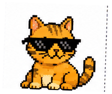

NOSSA HISTÓRIA
A Horrible Web 2000 foi fundada em 1998 por um grupo de pessoas que não sabia absolutamente nada sobre desenvolvimento de sites.
Nossa primeira página foi construída em 1997, um ano antes da fundação da empresa. Até hoje ninguém conseguiu explicar como isso aconteceu.
Desde então, trabalhamos incansavelmente para oferecer a pior experiência digital possível.
CRESCEMOS MUITO! MAS NÃO EM QUALIDADE!
NOSSA MISSÃO
Tornar tarefas simples extremamente complicadas. Acreditamos que qualquer processo de três etapas pode ser transformado em quinze.
NOSSA VISÃO
Ser reconhecida mundialmente como a empresa que conseguirá transformar a internet em um lugar ainda mais confuso.
NOSSOS VALORES
- Desorganização acima de tudo.
- Confusão como filosofia empresarial.
- Falta de planejamento estratégico.
- Reuniões que poderiam ser mensagens.
- Problemas que criamos para resolver outros problemas.
CONHEÇA A GENTE
GERENTE DE CONFUSÃO
Responsável por garantir que ninguém entenda o funcionamento da empresa.
ANALISTA DE PROBLEMAS INEXISTENTES
Especialista em encontrar soluções para problemas que ainda não foram inventados.
ESTAGIÁRIO DO BOTÃO ERRADO
Responsável por clicar em tudo, menos naquilo que deveria clicar.
DIRETOR DE NADA
Não faz absolutamente nada, mas possui o maior salário imaginário da empresa.
UM RECADO DA DIRETORIA
Agradecemos a sua visita. Ou não.
